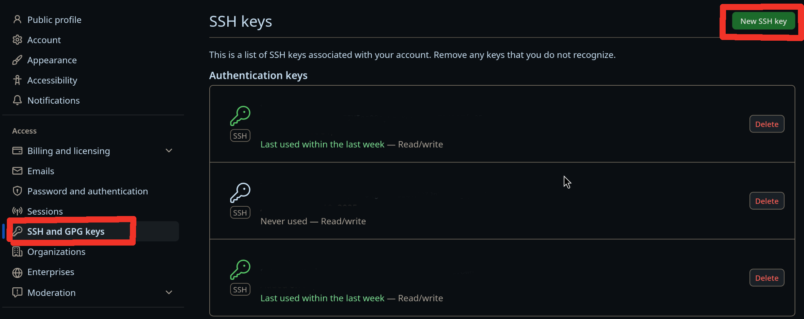
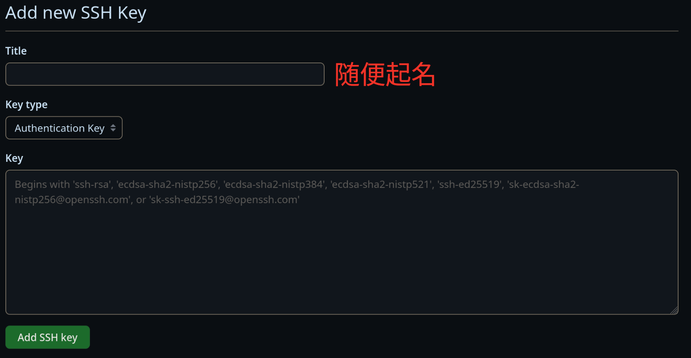
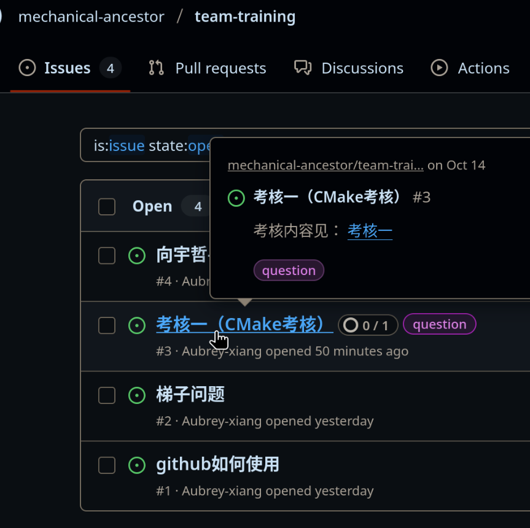
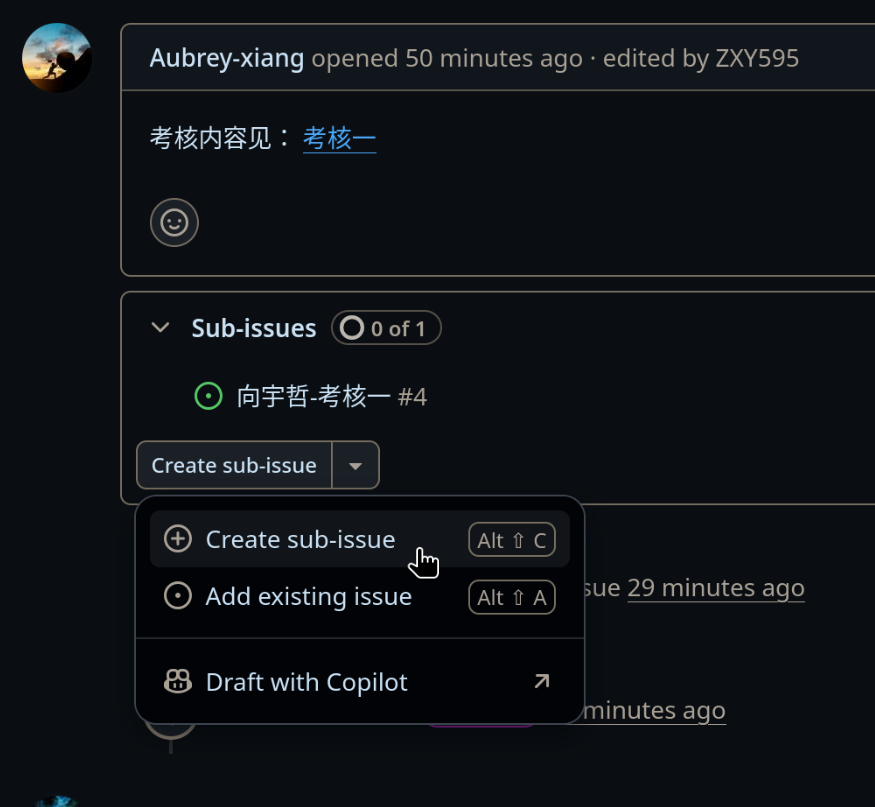
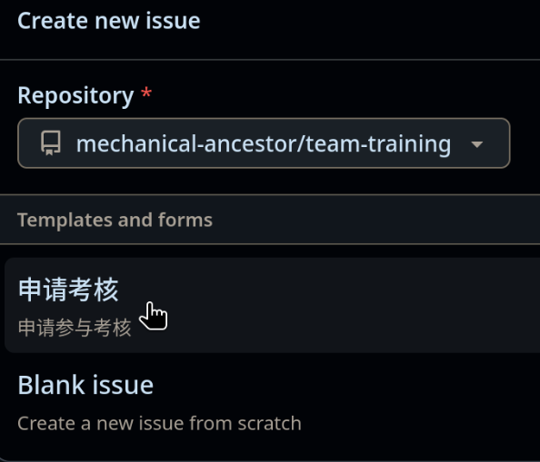
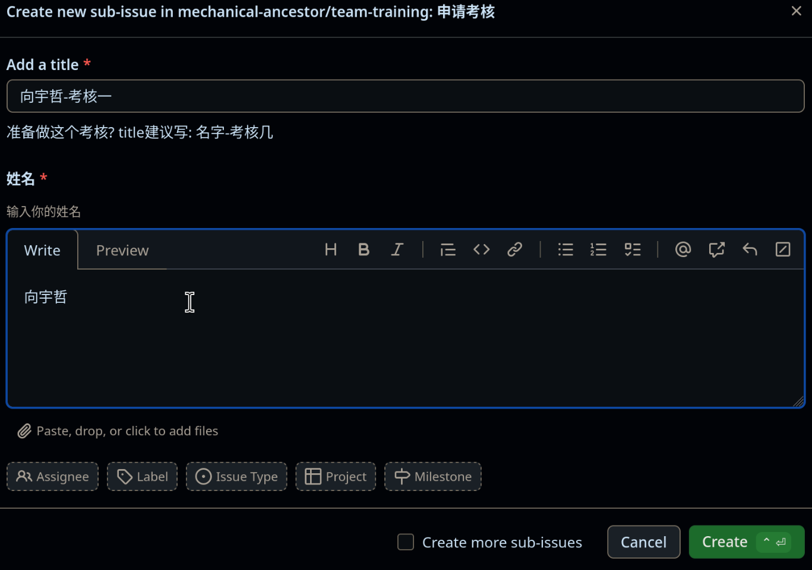
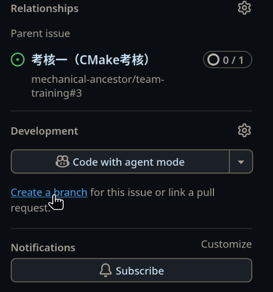
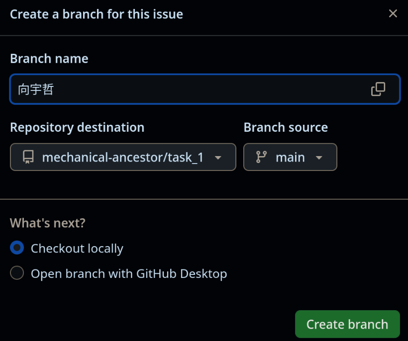
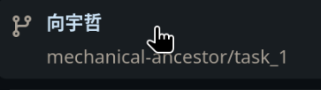
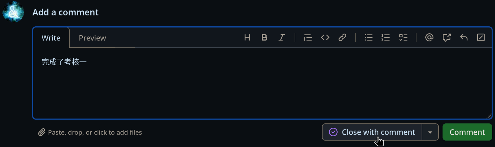

MA培训文档
GitHub
简介
GitHub是一个基于Git的开源代码托管平台，提供各种版本控制功能，包括代码托管、协作开发、项目管理、代码审查、问题跟踪等。
GitHub不只是一个“放代码的地方”，它还是一个代码管理和部署的平台， GitHub提供了一系列的工具和服务，帮助开发者更好地管理代码、协作开发、部署项目。
也就是说，你甚至可以在GitHub部署自己的网页，甚至运作一个完整的公司。
开始使用GitHub
核心概念
开始使用 GitHub
网络问题
可以尝试以下方法解决网络问题：
- 下载
Watt Toolkit加速GitHub - 科学上网，不方便细说
注册
点此注册 根据提示填写相关信息即可。
设置ssh密钥
为什么要设置ssh密钥
我们知道，要推送修改到GitHub仓库，首先肯定要验证你是谁，这样才能知道你有没有权限。

下面介绍三种GitHub支持的验证方式
- 密码认证
- ssh密钥认证
- 双因素(Two-factor)认证
由于GitHub在2021年8月13日以后不再支持密码登录，而是推荐双因素认证。
由于https协议在推送提交时用的就是密码认证，导致用https协议Clone下来的仓库，在推送修改时如果没有设置远程推送URL，
由于无法通过密码认证，导致无法推送。
但是如果使用ssh协议进行clone下来的仓库，就不需要输入用户名和密码，因为ssh协议使用你提前上传的ssh公钥进行认证。
为此我们可知，要使用ssh密钥认证，你需要：
- 生成ssh密钥对
- 将公钥上传到GitHub
- 用ssh协议Clone仓库，或者
设置远程推送URL
生成ssh密钥对
在终端输入以下命令，生成ssh密钥对：
ssh-keygen
然后如果没有特殊要求, 一路回车，默认即可。
这时候会在~/.ssh目录下生成两个文件：
id_ed25519: 私钥id_ed25519.pub: 公钥
这时可以复制公钥内容，准备上传到GitHub。
私钥千万不要泄露，泄露后任何人都可以用你的私钥登录你的GitHub账号，请妥善保管！
将公钥上传到GitHub
在GitHub点击头像，依次点击Settings，SSH and GPG keys，New SSH key按钮

Title: 随便起名Key: 粘贴之前生成的ssh公钥(id_ed25519.pub)的内容

加入组织
todo
设置设置远程推送URL为SSH URL
git remote set-url --push origin <ssh_url>
仓库
介绍
问题跟踪
流程
完整的考核的流程为申请考核，本地完成考核和提交考核。
申请
申请考核
查找考核issue
要完成一个考核，你需要在考核文档仓库的Issue里找到对应的考核Issue,

创建子问题
可以看到在issue中有一个链接，指向考核几的仓库，正如下图中的 考核一
点击Create sub-issue按钮，再选择Create sub-issue


根据模板提示填写即可
最后点击Create

在子问题中创建分支
找到并进入你刚刚创建的子问题，尝试在偏右下的地方找到并点击Create a branch

注意一下几点：
- 创建分支时，
Branch name就是你要创建的分支的名称，写什么都行1，但要避免与其他人的分支名字冲突。 - Repository destination是目标仓库，也就是你的分支将被创建到的仓库， 这里建议直接搜索考核仓库的全名2。
- Branch source是你要复制的分支，一般是main分支。

进入分支，完成考核
进入这个branch，在这里完成你的考核

关闭子问题，完成考核
完成后，先进入子问题，然后在Add a comment中写下你的考核完成情况，例如完成了什么
然后点击Close with comment，即关闭问题。

为什么考核要申请
这是为了方便追踪每个人的考核进度，提高考核效率， 也帮助每个人提前熟悉分工明确的开发流程。
-
你上述创建的子问题已经包含了你的姓名，所以为了安全考虑，在创建其他东西例如分支和仓库等，你不需要再写自己的姓名。 但为了避免与其他人的分支名字冲突，还是建议写上自己的姓名 ↩
-
由于这里选择仓库不智能，搜索仓库名又会搜索到Github上所有的仓库， 所以建议这里直接搜索仓库全名，即
仓库所有者名/仓库名，例如mechanical-ancestor/task_1↩
Ubuntu Environment
1. 目录
2.环境配置的一些经验
1.ubuntu中c++环境配置遇到的坑 90% 是各个库版本不兼容
2.如何安装c++库
如果你学过cmake，就应该知道c++项目都是(应该80%以上的吧)通过cmake编译和管理的。如果你不了解cmake，可以参考这里。
所以，如果你想安装c++库：
1.源码安装：
思路和你编译运行c++程序一样，只是要先下载源码
一般来说，c++库都有github仓库，你可以直接下载源码，然后编译安装。
git clone '库的github地址'
例子：
git clone https://github.com/opencv/opencv.git
进入源码目录，执行
mkdir build
cd build
cmake ..
make -j8 # 编译，-j8表示使用8个线程并行编译
sudo make install # 安装到系统目录
2.包管理器安装：
如果你使用的是Ubuntu，你可以直接使用apt-get安装。
sudo apt-get install '库在apt-get中的名字'
注：apt-get安装的库一般都比较老，版本比较低，如果想用最新版本，可以参考源码安装。
名字不知道的话，可以问ai
例子：
sudo apt-get install libopencv-dev
3. 如何跑开源项目
一般来说，开源项目都有详细的安装说明，你可以参考。 在开源项目(github上)的readme中，一般都会有编译和运行的命令。
思考： 在跑开源项目的时候，以及下面配置自瞄环境的时候 有各种不同的命令, 他们的作用是什么？，有其他方法吗？，相比于其他方法有什么优势(区别)
3.自瞄环境配置
下面是老学长的环境配置（一点史，请见谅），可以参考：
老学长的环境配置
MA 导航
概述
导航是指在一个环境中，从一个点（称为起点）到另一个点（称为终点）的路径规划。 在实际应用中，导航系统需要根据环境的复杂性、障碍物、地形等因素，制定出一条安全、有效、舒适的路径。
建图，定位，感知
决策
路径规划，轨迹优化，避障，路径跟踪